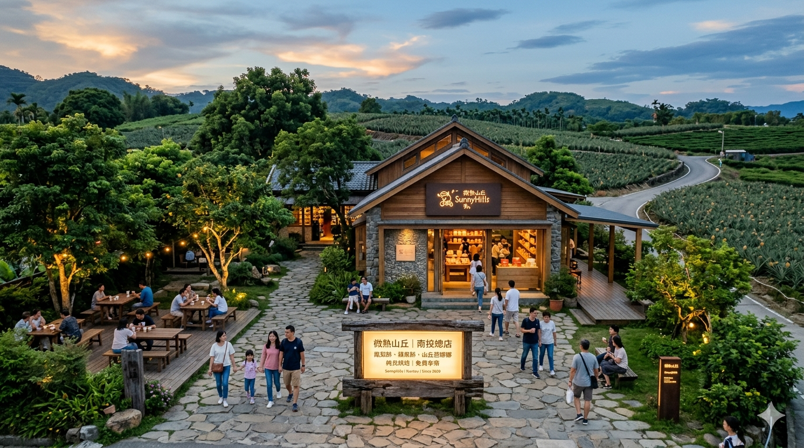

南投市
台灣唯一不靠海的縣市，但這裡的壯麗山景、空靈湖泊，完全不輸給沿海城市！
微熱山丘（SunnyHills）位於於南投市八卦山
台灣最著名的鳳梨酥傳奇品牌。
它打破了傳統鳳梨酥使用「冬瓜餡」的作法，改用純鳳梨（台農2號、3號仔）製作，掀起了全台「土鳳梨酥」的狂潮。品牌以「真誠烘焙」為核心，不僅成功將傳統糕點精緻化，更拓展至日本東京、新加坡等海外市場，成為代表台灣的國際伴手禮。

九族文化村(位於台灣南投縣魚池鄉)
結合台灣原住民傳統文化、歐洲宮廷花園以及日月潭空中纜車而聞名）
樂園座落於一片蔥鬱的森林山谷之中，以結合台灣原住民傳統文化、歐洲宮廷花園、頂尖遊樂設施以及日月潭空中纜車而聞名。它不僅榮獲米其林綠色指南三星級推薦，更是日本櫻花協會唯一認證的海外賞櫻名所。
清境農場（位於南投縣仁愛鄉）
四季景致分明，是台灣非常熱門的高山渡假勝地
有「台灣阿爾卑斯山」美譽。園區融合了獨特的滇緬移民歷史與高山風情，最經典的玩法是到「青青草原」觀賞招牌綿羊秀、餵食療癒羊群，並漫步於「高空觀景步道」平視壯麗的合歡群峰。周邊更遍布充滿異國感的歐式城堡民宿，是集大自然、萌羊與歐洲度假感於一身的避暑勝地。